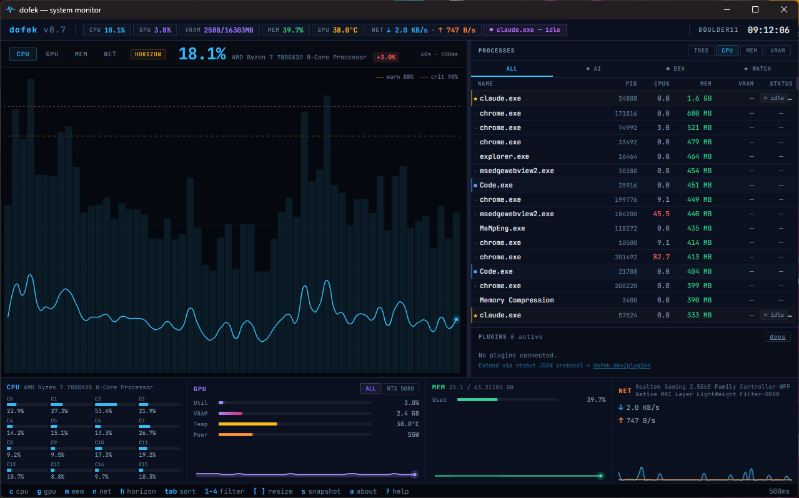
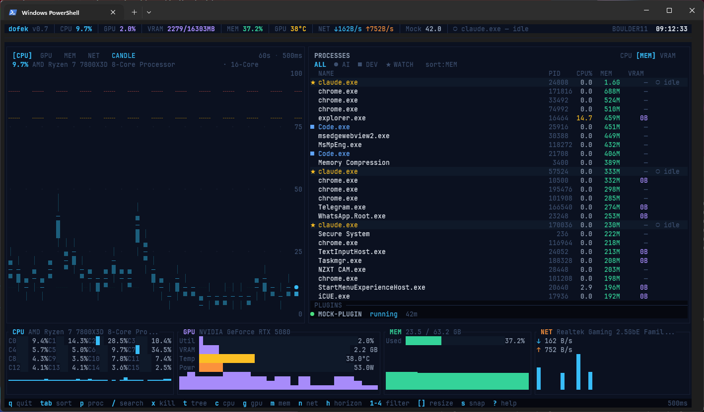

This manual covers everything you need to run, configure, and extend dofek — both the terminal (TUI) and desktop (GUI) interfaces. It ships alongside the binaries (Windows: C:\Program Files\dofek\, Linux: package-managed under /usr/share/dofek/ or beside the AppImage, macOS: inside the dofek.app bundle) and works entirely offline.
dofek (Hebrew: דּוֹפֶק — "pulse" or "heartbeat") is a cross-platform system monitor built for developers running local AI workloads. It tracks per-process VRAM, flags Ollama and other inference workloads automatically, and renders CPU history as candlestick charts so you see real variance — not smoothed averages. Supported platforms: Windows 10/11, Linux x86_64, and macOS 12+ on Apple Silicon (aarch64).
It ships as two interfaces driven by the same Rust core:


dofek.exe from C:\Program Files\dofek\..AppImage, or dofek-gui after installing the .deb/.rpm.open /Applications/dofek.app. First launch shows "dofek.app is damaged and can't be opened" — the app isn't damaged, it's unsigned and quarantined. Run xattr -dr com.apple.quarantine /Applications/dofek.app once and it launches normally. (On macOS 14 Sonoma and earlier, right-click → Open → Open also works; macOS 15 Sequoia removed that bypass.)dofek-tui# Windows (PowerShell)
dofek-tui --config "$env:APPDATA\dofek\dofek.toml"
# Linux
dofek-tui --config ~/.config/dofek/dofek.toml
# macOS
dofek-tui --config ~/Library/Application\ Support/dofek/dofek.tomlinstall-wt-profile.ps1 (ships with the source) to add a pre-configured "dofek" profile to Windows Terminal. On Linux/macOS, set the font in your terminal's preferences.Both interfaces read the same config, run the same plugins, and collect the same data. Pick based on context:
| Use case | Recommended |
|---|---|
| Remote session / SSH / low-resource | TUI |
| Always-visible dashboard on your desktop | GUI |
| Scripting + snapshot exports (s key) | TUI |
| Smoothed Bezier charts, click-to-kill | GUI |
Running alongside ollama, lm-studio | Either — both detect AI workloads |
| Key | Action |
|---|---|
| c | Switch main chart to CPU (candlestick) |
| g | Switch main chart to GPU (area chart) |
| m | Switch main chart to Memory |
| n | Switch main chart to Network |
| h | Toggle horizon chart mode |
| p | Full-screen process view |
| tab | Cycle sort column (Name / PID / CPU% / MEM / VRAM) |
| 1 – 4 | Filter: ALL / AI / DEV / WATCH |
| / | Search processes by name (live filter) |
| ↑ ↓ / j k | Navigate process list |
| del / x | Kill selected process (with confirmation) |
| X | Kill all matching processes (search/filter) |
| [ / ] | Resize chart / watchlist split |
| + / - | Increase / decrease refresh rate |
| s | Save snapshot to ~/dofek-snapshots/ |
| a | About dofek |
| ? | Toggle help overlay |
| esc | Clear search / close overlays |
| q | Quit |
dofek loads config from the first file it finds, in this order:
--config <path> command-line flag (TUI only)./dofek.toml in the current working directory%APPDATA%\dofek\dofek.toml~/.config/dofek/dofek.toml~/Library/Application Support/dofek/dofek.tomlAll sections are optional. Missing values fall back to sensible defaults.
[general]
refresh_ms = 500 # Poll interval (milliseconds)
history_len = 60 # Chart samples to keep in memory
[display]
show_temps = true
show_power = true
process_count = 50 # Max processes in watchlist
[ai]
vram_threshold_gb = 1.0 # VRAM above this flags a process as AI
known_ai_processes = ["ollama", "ollama_llama_server", "python", "lm_studio", "claude"]
[categories]
dev_processes = ["code", "cargo", "rustc", "node", "npm", "git", "docker", "go"]
watch_processes = ["ffmpeg", "obs"]
watch_pids = []
[lhm]
url = "http://localhost:8085" # LibreHardwareMonitor web server (fallback)
[telemetry]
enabled = false # Opt-in; disabled by default
[[plugins]]
name = "ollama"
command = "dofek-ollama"
args = ["--host", "http://localhost:11434"]
enabled = true
timeout_ms = 2000
| Key | Description |
|---|---|
general.refresh_ms | Poll interval. Lower = smoother, more CPU. Default 500. |
general.history_len | Samples retained per chart. Default 60. |
display.show_temps | Show temperature bars in the bottom strip. |
display.show_power | Show GPU power draw bars. |
display.process_count | Max watchlist length; panel height auto-fits. |
ai.vram_threshold_gb | VRAM above this (per-process) flags the process as AI workload. |
ai.known_ai_processes | Substring match (case-insensitive). Matches are treated as AI workloads regardless of VRAM. |
categories.dev_processes | Substrings matched against process names for the DEV category. |
categories.watch_processes | Substrings pinned to the WATCH category. |
categories.watch_pids | Specific PIDs pinned to WATCH (useful for jobs you're babysitting). |
lhm.url | LibreHardwareMonitor web-server URL. Only used if NVML is unavailable. |
telemetry.enabled | Anonymous usage telemetry. Disabled by default. |
[[plugins]] | Repeatable table. Each entry spawns a plugin child process. |
Every process gets classified into zero or one category. Priority goes WATCH → AI → DEV → none.
| Category | How it's assigned |
|---|---|
| AI ● | Name matches ai.known_ai_processes, or VRAM > ai.vram_threshold_gb, or name ends with _server and uses any VRAM. |
| DEV ■ | Name matches categories.dev_processes. |
| WATCH ★ | Name matches categories.watch_processes, or PID listed in categories.watch_pids. |
Filter the watchlist with keys 1 (ALL) / 2 (AI) / 3 (DEV) / 4 (WATCH), or click the tabs in the GUI.
Once a process is classified as AI, dofek tags its current state:
| Badge | Condition |
|---|---|
| ● inferring | VRAM > threshold and GPU utilization > 20%. |
| ● loading | VRAM increasing by > 200 MB between polls. |
| ○ idle | Known AI process, low utilization. |
The AI badge in the top ticker bar always reflects the currently-most-active AI workload.
dofek talks to two data sources for GPU metrics:
LibreHardwareMonitor.exe as administrator.8085).lhm.url in dofek.toml.schema_version: 1) but subject to breaking changes until further notice. Pin your plugin to a specific dofek version if stability matters.Plugins are external processes that dofek spawns and polls via newline-delimited JSON over stdin/stdout. Each poll cycle, dofek writes a request, reads a response, and renders any panels / process annotations / metrics the plugin returned.
| Plugin | Purpose | Requires |
|---|---|---|
dofek-ollama | Shows loaded models + inference state, annotates Ollama processes | Ollama running locally |
dofek-docker | Lists running containers, annotates Docker processes | Docker Desktop with TCP API enabled |
Enable a plugin by adding a [[plugins]] table to dofek.toml. See the example config above.
The plugin dock (inside the watchlist panel) shows one row per plugin:
Plugin development docs: dofek.dev/plugins.
dofek includes opt-in anonymous telemetry to help improve the app. It is disabled by default. Nothing is sent unless you explicitly enable it.
A random anonymous UUID is generated on first run and stored alongside dofek.toml in the user config directory: %APPDATA%\dofek\settings.toml on Windows, ~/.config/dofek/settings.toml on Linux, ~/Library/Application Support/dofek/settings.toml on macOS. Events batch locally and flush via HTTPS every 60 seconds. If the endpoint is unreachable, batches are silently dropped.
To disable: toggle the switch in the GUI help overlay, or set telemetry.enabled = false in dofek.toml.
Binaries are currently unsigned. Code signing is on the roadmap. Workarounds per OS:
chmod +x dofek_*.AppImage before running. .deb/.rpm packages install normally via apt/dnf.xattr -dr com.apple.quarantine /Applications/dofek.app once. On macOS 14 Sonoma and earlier you can also right-click → Open → Open; macOS 15 Sequoia removed that bypass.Verify the download first by comparing against SHA256SUMS.txt from the GitHub release:
# Windows (PowerShell)
Get-FileHash .\dofek_1.3.4_x64_en-US.msi -Algorithm SHA256
# Linux
sha256sum -c SHA256SUMS.txt
# macOS
shasum -a 256 -c SHA256SUMS.txtnvidia-smi should work from a terminal.--runtime=nvidia. Run dofek on the Windows host instead.curl http://localhost:11434/api/tagsdofek-ollama.exe from C:\Program Files\dofek\ on Windows, dofek-ollama from /usr/bin/ or the AppImage on Linux, or dofek-ollama from inside dofek.app/Contents/MacOS/ on macOS.dofek.toml under [[plugins]].install-wt-profile.ps1 (from the source repo) for a pre-configured profile. On Linux/macOS, set the font in your terminal preferences./sys/class/hwmon via sysinfo::Components. If your kernel doesn't expose package-level temps, only per-core sensors will appear; ensure the relevant coretemp/k10temp/amdgpu module is loaded.sudo dofek-tui. SIP-protected macOS system processes can't be killed at all.| Website | dofek.dev |
| Source & releases | github.com/AsafSaar/dofek |
| Bug reports | github.com/AsafSaar/dofek/issues |
| Discussions / plugin showcase | github.com/AsafSaar/dofek/discussions |
| Security disclosure | Private security advisory |